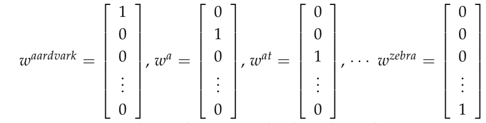

词向量
在所有的自然语言任务中向量化是必不可少的一步，也是所有任务的第一步，只有将数据编码成数值向量才能进行后续的任务，一个好的向量化表示方法能够表示更多的内涵意义，从而让词包含更多的信息。
如何去表示一个字/单词
在所有NLP任务中，第一个也是最重要的公共问题是我们如何将单词表示为任何模型的输入。早期NLP的许多工作都将单词视为原子符号。为了在大多数NLP任务中表现出色，我们首先需要对单词之间的相似性和差异有一些概念。有了字向量，我们可以很容易解决这些问题(使用距离度量，如jaccard、cosine、eu-clidean等)不管是英文，还是中文都存在大量的单词词汇，这些词汇中间大所存在着或多或少的关系，我们希望可以将这些词映射到某个词空间中作为这个空间中某个点。这样这个点在空间中的向量化表示就可以用来表示这个词了，同时可以在这个空间中可以度量词之间的关系。而最简单的词空间就是整个词汇表空间。
One-Hot
One-Hot是一种非常简单的词向量表示，它使用\(R^{|V|*1}\)大小的向量表示每个单词，其中\(|V|\)表示词汇表大的小，如要表示‘A’:它以词汇表大小n构建一个长度为n的向量[0,0,0,....1...0]，向量中除了单词‘A’所在的位置为1，其他位置都为0.

但是我们发现这种表示方法把每个单词表示成单独的个体，无法体现出他们之间的联系，而且数据稀疏，空间巨大。因此我们可以将它映射到更小的空间里.
基于SVD的向量表示
SVD:奇异值分解，是一种矩阵分解方法，遍历数据集得到一个共现矩阵，然后进行奇异值分解，选择前K个奇异值，对原始矩阵进行降维，就可以得到一个低维的词向量表示。以下是基于两种共现矩阵的词向量表示。
单词-文档共现矩阵
词-文档的共现矩阵能够表示出相关的词，那么如何用这个矩阵来表示词向量呢，就是以文档的大小作为单词向量的大小，在进行SVD分解得到映射后的向量。假如有M篇文档，有V个词汇，那么这个共现矩阵大小为M*N,而对于新增文档，新增词，这个矩阵就必须更新。
单词-单词共现矩阵
单词-单词的矩阵同样能够表示单词之间的相关性.而单词的量级变化没有文档数变化那么大，相比于单词-文档矩阵，这个矩阵要小很多。采用同样的矩阵分解方式可以得到新的词向量表示。
降维前：
降维后：
优势与存在的问题
优势：
- 有效利用了统计的信息
- 矩阵分解可以得到部分语义信息
缺点：
- 维护的矩阵太大，且非常稀疏(非常多数数据没有共现)
- 新增数据或单词都要对矩阵进行更新
- 需要频繁的进行矩阵分解
解决方案
- 忽略无用词「无意义」
- 使用窗口，即使用文档中单词的距离进行共现计数加权
基于迭代的词向量-word2vec
放弃计算和存储大型的数据矩阵，神经网络兴起之后，我们尝试通过训练一个model来得到单词的词向量，而word2vec的思想就是训练一个参数为词向量的模型,这个模型我们所说的
语言模型.当我们得到一个优化的语言模型的时候就得到了一个高质量的词向量(model的隐层参数)。
语言模型（Langue Model）
语言模型描述的是一个句子(单词序列)的合理性，一个好的语言模型能够给一个合理的句子更高的分数(概率)。加入一个句子s由n个字组成那么他的概率可以表示如下：
\[
P_s = P(w_1,w_2...w_n) = \prod _{ i=1 }^{ n }{ P(w_i) } \tag{Unigrams:基于NB条件独立假设}
\]
以上是基于条件独立假设的Unigrams模型：假设句子中的每个单词/字相互独立，那么这个句子的概率值就是每个单词/字的概率积，很显然这种假设太过简单，以至于无论几个单词如何组合他们的概率都是相同的。而一句话中每个单词/字的概率是依赖于上下文的，那么句子s的概率可以表示如下：
\[
P_s = P(w_1,w_2...w_n) = \prod _{ i=2 }^{ n }{ P(w_i|w_{i-1}) } \tag{Bigrams:基于马尔科夫模型}
\]
以上是基于马尔科夫模型的Bigrams:假设当前词的概率依赖于前一个词的概率，那这个句子的概率就是单词、字的条件概率积。这种模型相比于前面的Unigrams提供更多上下文和语序信息。
以上就是我们所说的
N-gram语言模型，N表示当前词的概率依赖于前N-1个词。在这里我们知道了如何去计算了一个句子的概率，那么我们需要如何去训练整改率呢??「『即如何使得这个概率最大化』」
word2vec两种训练算法：
cbow:上下文词袋模型，以上下文词预测这个中心词w。
skip-gram:以一个中心词W去预测上下文词。
wordvec的语言模型非常简单，是一个三层的神经网络，包含输入层-隐藏层-输出层如下图：右侧：CBOW,左侧：skip-gram
参数解析：
- \(W\):单词
- \(V\):词汇表大小
- \(N\):我们要得到的词向量的大小
- \(k\):第k个中心词
CBOW模型的训练步骤：
- 1. 输入的上下文词的one-hot表示。
- 2. 根据\(W_{V*N}\)输入词矩阵得到上下文词的词嵌入(embding)表示。
- 3. 将得到的上下文词的词嵌入表示求平均值，得到一个N维的向量。
- 4. 将这个向量与中心词矩阵\(W'_{N*V}\)相乘，就得到了一个V维的向量，他的每一个值表示的上下文预测的中心词的可能性大小。
- 5. 为了更好的描述这种可能性大小，我们将其接入softmax，进行归一化城概率值。
- 6. 将这个概率向量与真正的中心词向量比较就可以得到误差从而更新我们要训练的\(W，W'\)矩阵。
⚠️步骤2中提到得到词嵌入表示，那么这个词嵌入是如何得到的呢？，事实上\(W_{V*N}\)矩阵就是一个
词向量矩阵「这个矩阵是由一个均匀分布随机生成的」，而one-hot向量不过是从中选择了属于自己的那个而已。所以：我们在构建一个预训练词嵌入的模型的时候，既可以把词向量作为一个权重参数，也可以直接用词向量去替换成文档的向量表示。
知道如何训练，那么如何对训练的结果用于优化模型参数呢？需要定义目标函数和损失函数，采用SGD迭代求解的方式不断地去更新参数。
损失函数与目标函数
目标函数:最大化上下文预测的中心词的概率。
\[\begin{aligned}
skip-gram-obj&= \prod_{j=0}^{2m} P(W_{c-m+j...c-m+j}|W_i)\\
context-bow-obj&= P(W_i|W_{c-m+j...c-m+j})
\end{aligned}
\]
m表示上下文窗口大小m=2就是上下文各选2个词
损失函数：交叉熵
\[\begin{aligned}
skip-gram H(y,y')&= -ylog(y')\\
&=-1*log(y') \\
&=-log{P(W_{c-m...c-m}|W_c)} \\
&=-log{\prod_{j=0,j\neq m}^{2m}P(W_{c-m+j}|W_c)} \\
&=-log{\prod_{j=0,j\neq m}^{2m}P(u_{c-m+j}|v')}\\
&=-log\prod_{j=0,j\neq m}^{2m}(\frac {exp^{u_{c-m+j}^Tv'}}{\sum_{k=0}^{V}exp^{u_k^Tv'}})\\
J&=-\sum_{j=0,j\neq m}^{2m} u_{c-m+j}^Tv'+log \sum_{i=0}^{V}exp^{u_i^Tv'}\\
\end{aligned}
\]
\[\begin{aligned}
context-bow H(y,y')&= -ylog(y')\\
&=-1*log(y') \\
&=-log{P(W_c|W_{c-m...c+m})} \\
&=-log{P(u_c|v')}\\
&=-log{\frac {exp^{u_c^Tv'}}{\sum_{k=0}^{V}exp^{u_k^Tv'}}}\\
J&=-u_c^Tv'+log{\sum_{i=0}^{V}{u_i^Tv'}}\\
\end{aligned}
\]
有了损失函数，就可以求解梯度\(▽_{J(\theta)}\)，从而更新我们的参数\(u_c=u_c-α▽_J\)
word2vec两种优化算法：
- hierarchical softmax：层次化softmax
- Negative sampling：负采样